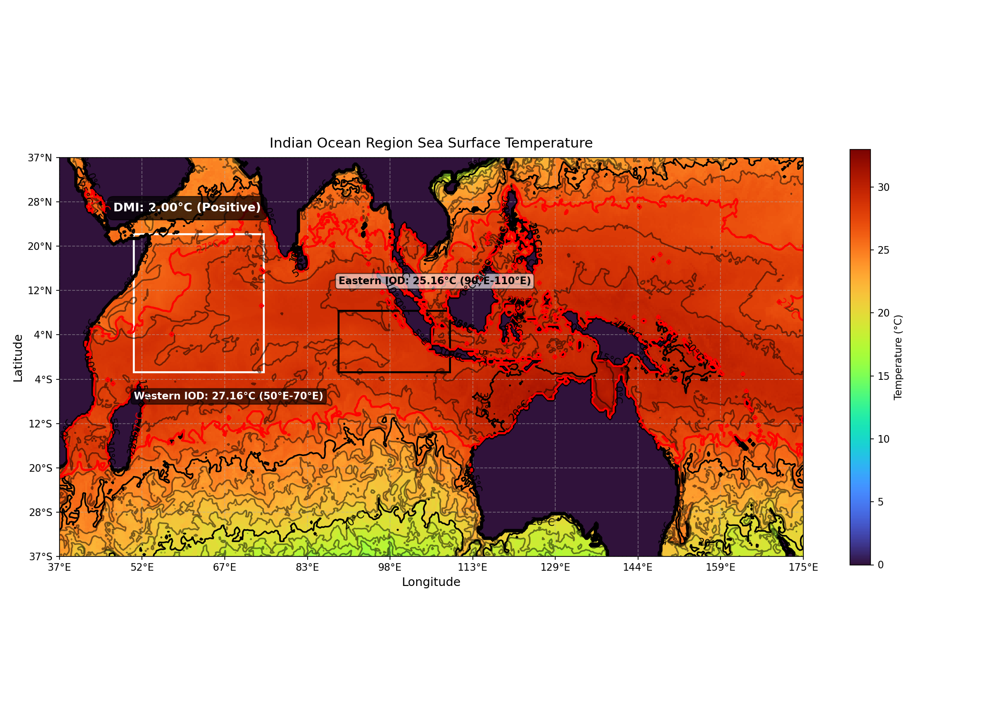

IOD Region Temperature and DMI Calculations

Sea Surface Temperature (SST) - Eastern and Western IOD Regions
Temperature Contour Visualization (Static)
IOD Region Time Series Viewer
Temperature Contour Visualization (Time Series)

Time: Dec 31, 2019 — 00:00 UTC (Frame 0)
Playback Speed (fps): 1